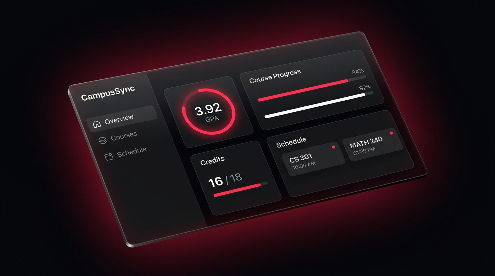
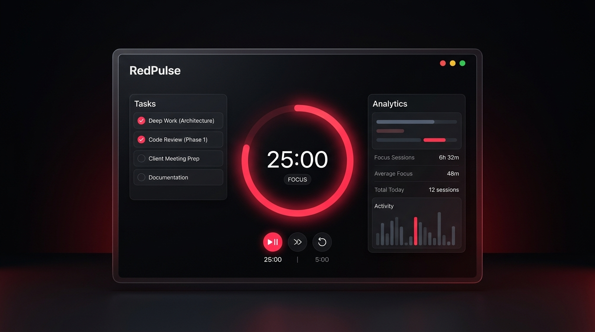

Kabankalan City • Negros Occ.
Jolex Besueña
College Web Developer & UI Builder
Crafting fast, responsive web experiences with Apple-grade precision, tactile motion, and clean front-end architecture.
I combine minimalist visual discipline with modern web fundamentals to turn ideas into polished, interactive sites.
College Web Developer & UI Builder
I'm an Information Technology college student at Kabankalan Catholic College, Inc. (CMAT) passionate about front-end engineering, responsive design systems, and fluid scroll interactions. From institutional multi-page web platforms to dark-mode study utilities, I obsess over typography, speed, and every pixel in between.
Production Pages Shipped
Built & deployed for the KCC web platform
Responsive Architecture
Crafted fluidly from mobile to widescreen
Explore the live multi-page KCC website redesign directly below. Switch viewports, jump between pages, or inspect in fullscreen.
Structured navigation spanning Home, Academics (Basic Ed, Senior High, College Programs), Admissions, Campus Life, and Contact.
Custom hero parallax layers paired with AOS scroll reveals and cohesive typography across Playfair Display, Plus Jakarta Sans, and Inter.
Built with Bootstrap 5 grid foundations and custom CSS theme variables, deployed seamlessly via GitHub Pages.
A curated mix of live production deployments and modern UI engineering concepts built during college.
Complete multi-page modern redesign for Kabankalan Catholic College featuring parallax hero layers, program directories, and mobile-first navigation.

A dark-glass academic dashboard concept designed for college students to track class schedules, GPA progress, and department announcements at a glance.

Minimalist distraction-free study timer and task tracker inspired by Apple Watch rings, built to keep late-night coding sessions sharp and structured.
Designed and deployed a full modern multi-page website concept for Kabankalan Catholic College, Inc., integrating custom parallax hero visuals, responsive program cards, and clean CSS theming.
Focused on Apple-grade visual hierarchy, CSS custom properties, hardware-accelerated `requestAnimationFrame` motion, and accessible responsive grids.
Building a strong foundation in web development, software engineering principles, database concepts, and collaborative version control in Kabankalan City.
Open to college collaborations, front-end internships, freelance web redesigns, and creative UI challenges.